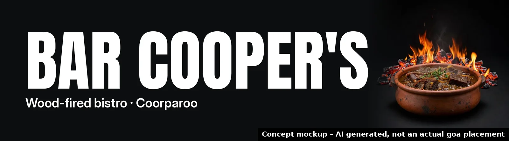

Bar Cooper's
Neighbourhood wood-fired bistro at Shop 4, 321 Chatsworth Road, Coorparoo.
🗓 Confirmed trading 2026 · as reported by Brisbane Food Guide – New Openings (checked 15 Oct 2026) ↗
Disabled in this demo: in production this books a call with your goa rep.

Why billboards, why now
["Bar Cooper's new wood-fired bistro opens in 2026 at Shop 4, 321 Chatsworth Road, Coorparoo, and goa sites at 220 Old Cleveland Road are 0.7 km away.", 'The 6x3m site at Stanley St East corner Tiber St is 1.1 km from the venue, allowing local drivers and pedestrians to see the advertising at the time of opening.']
- 📍 6 goa sites within 2 km of you; the nearest is 0.7 km away.
- 🗓 Timed to: Confirmed trading 2026.
- 🖥 Digital sites can run several creatives per day and change by time of day.
Boards near you
Your pin is approximate. Board locations from goa's public site list. © OpenStreetMap contributors.
Concept creative

Concept mockups, AI generated, not actual goa placements. No real logos used; final artwork would come from you.
Build your campaign
Pick boards and timing to shape a brief. Prices aren't shown here: indicative pricing confirmed by goa.
Indicative pricing confirmed by goa. Availability subject to booking.
Suggested timeline
- NowThe moment: Confirmed trading 2026
- 02 NovSuggested campaign start
- 30 NovCheck-in: refresh creative or timing (digital sites)
- 12 DecQLD summer school holidays begin (to 26 Jan 2027): optional seasonal burst
Next step
A 15-minute call to confirm availability and indicative pricing for the boards you picked.
Book a call with goaDisabled in this demo: in production this books a call with your goa rep.